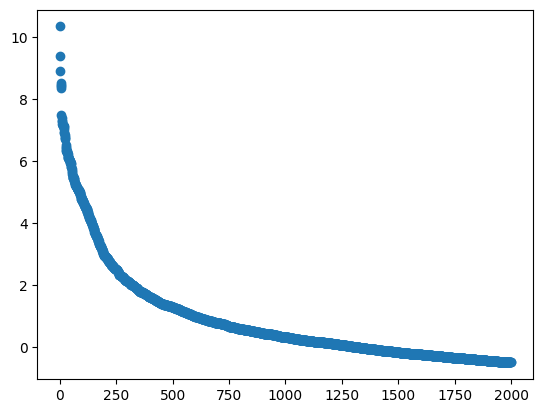
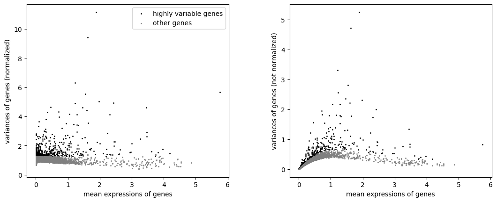
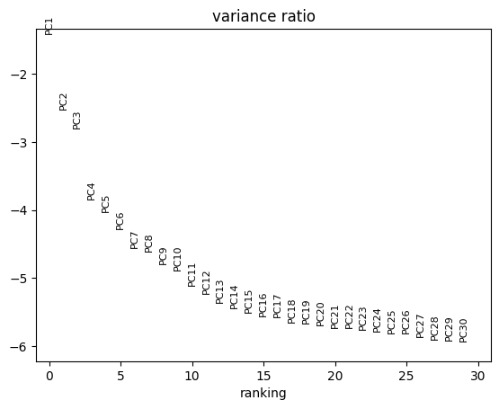
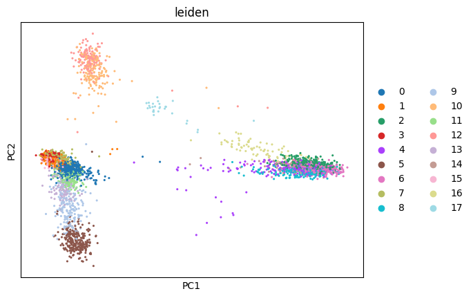
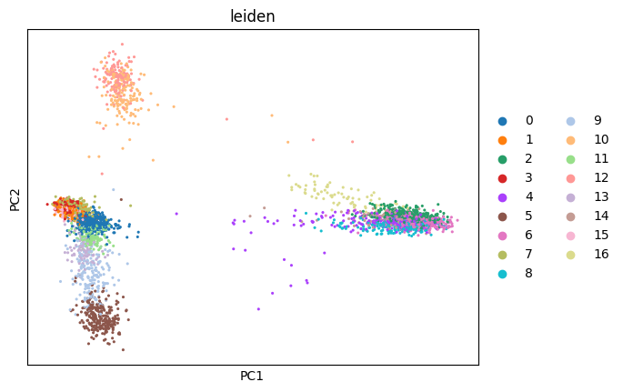

import numpy as np
import pandas as pd
import scanpy as sc
import json
import os
import matplotlib.pyplot as plt
from scipy.stats import rankdataClustering and differential expression analysis using scanpy
dataset_name = 'PBMC1' # modify this
data_in_path = './data/{}/filtered/10X/'.format(dataset_name)
data_out_path = './data/{}/scanpy/'.format(dataset_name)
default_path = '{}default/'.format(data_out_path)
celltypist_path = '{}celltypist/'.format(data_out_path)
antibody_path = '{}antibody/'.format(data_out_path)
nclusters_celltypist_path = './data/{}/celltypist/nclusters.json'.format(dataset_name)
nclusters_antibody_path = './data/{}/antibody_annotation/nclusters.json'.format(dataset_name)
top_number_of_markers = 500
min_cluster_size = 0
with open(nclusters_celltypist_path) as f:
nclusters_celltypist = json.load(f)['nclusters']
with open(nclusters_antibody_path) as f:
nclusters_antibody = json.load(f)['nclusters']
nclusters_threshold = 1/10
min_ncluster_celltypist = nclusters_celltypist - nclusters_threshold*nclusters_celltypist
max_ncluster_celltypist = nclusters_celltypist + nclusters_threshold*nclusters_celltypist
min_ncluster_antibody = nclusters_antibody - nclusters_threshold*nclusters_antibody
max_ncluster_antibody = nclusters_antibody + nclusters_threshold*nclusters_antibody
if not os.path.exists(default_path):
os.makedirs(default_path)
if not os.path.exists(celltypist_path):
os.makedirs(celltypist_path)
if not os.path.exists(antibody_path):
os.makedirs(antibody_path)Data loading and preparation
Dataset loading
adata = sc.read_10x_mtx(
data_in_path,
var_names='gene_symbols',
cache=False
)
adata.var_names_make_unique()
adataAnnData object with n_obs × n_vars = 3610 × 14366
var: 'gene_ids'Studying feature variance
matrix = adata.X
matrix = matrix.todense()
neg_variances = np.sort(-np.var(matrix, axis=0))
sorted_log_variances = [np.log(-i) for i in neg_variances.T][:2000]
plt.scatter([i for i in range(len(sorted_log_variances))], sorted_log_variances)<matplotlib.collections.PathCollection at 0x2bf571c90>
Data normalization
sc.pp.normalize_total(adata, target_sum=1e4)
sc.pp.log1p(adata)Feature selection
sc.pp.highly_variable_genes(
adata,
n_top_genes=500, # chosen based on elbow plot above
flavor='seurat_v3'
)
sc.pl.highly_variable_genes(adata)
Feature scaling
adata.raw = adata
adata = adata[:, adata.var.highly_variable]
sc.pp.scale(adata, max_value=10) # default=None, 10 in the tutorial on pbmcClustering
Plot pca explained variance ratio to choose number of components
sc.tl.pca(adata, svd_solver='arpack', n_comps=30, use_highly_variable=True)
sc.pl.pca_variance_ratio(adata, log=True)
Clustering with default parameters
Perform the clustering
sc.pp.neighbors(
adata,
n_pcs=10 # chosen based on elbow plot above
)
sc.tl.leiden(adata)Visualize the clustering in the PCA space
sc.pl.pca(
adata,
color=['leiden'],
size=20
)
Save the clustering results
default_markers_df = pd.DataFrame(adata.obs['leiden'])
default_markers_df = default_markers_df.rename(columns={'leiden': 'cluster'})
default_markers_df.index.name = 'cell'
default_markers_df['cluster'] = default_markers_df['cluster'].astype(int) + 1
default_markers_df.to_csv(f'{default_path}/clustering_labels.csv', index=True)
num_clusters_default = len(default_markers_df['cluster'].unique())Differential expression on default clusters
sc.tl.rank_genes_groups(adata, 'leiden', method='wilcoxon') # default='t-test', wilcoxon suggested in the tutorialSave markers
default_markers_df = pd.DataFrame(columns=['gene', 'cluster', 'rank'])
for i in range(num_clusters_default):
indices = np.argsort(adata.uns['rank_genes_groups']['pvals_adj'][str(i)])
genes = adata.uns['rank_genes_groups']['names'][str(i)][indices][:top_number_of_markers]
ranks = rankdata(adata.uns['rank_genes_groups']['pvals_adj'][str(i)][indices][:top_number_of_markers], method="ordinal")
temp_df = pd.DataFrame(
np.column_stack((genes, [i+1 for _ in range(top_number_of_markers)], ranks)),
columns=['gene', 'cluster', 'rank']
)
default_markers_df = pd.concat([default_markers_df, temp_df], ignore_index=True)
default_markers_df['cluster'] = default_markers_df['cluster'].astype(int)
default_markers_df['rank'] = default_markers_df['rank'].astype(int)
default_markers_df.to_csv(f'{default_path}/markers.csv', index=False)Clustering tuning resolution according to celltypist
print("Nummber of clusters to find: {}".format(nclusters_celltypist))Nummber of clusters to find: 12# get ids of clusters bigger than 40 cells
mapping = pd.read_csv('./data/{}/celltypist/celltypist_mapping.csv'.format(dataset_name).format(dataset_name))
counts = pd.read_csv('./data/{}/celltypist/celltypist_annotation_counts.csv'.format(dataset_name))
mapping_counts = mapping.merge(counts, left_on='go', right_on='cluster.ids')
mapping_counts = mapping_counts[mapping_counts['count'] > min_cluster_size]
clusters_ids_to_keep = mapping_counts['id']
# get barcodes of cells in clusters bigger than 40 cells
celltypist_labels_df = pd.read_csv('./data/{}/celltypist/celltypist_labels.csv'.format(dataset_name))
celltypist_labels_df = celltypist_labels_df[celltypist_labels_df['cluster.ids'].isin(clusters_ids_to_keep)]
barcodes_to_keep = celltypist_labels_df['cell']
barcodes_to_keep = [barcode[:-2] for barcode in barcodes_to_keep]
subset_cells = adata.obs_names.isin(barcodes_to_keep)
adata_celltypist = adata[subset_cells, :]Perform the clustering
sc.pp.neighbors(
adata_celltypist,
n_pcs=10 # chosen based on elbow plot above
)
max_resolution = 3
min_resolution = 0
while True:
resolution = (max_resolution + min_resolution)/2
print("Trying resolution: {}".format(resolution))
sc.tl.leiden(adata_celltypist, key_added="leiden_scVI", resolution=resolution)
num_clusters = adata_celltypist.obs.leiden_scVI.values.categories.nunique()
print("Number of clusters found: {}".format(num_clusters))
if num_clusters >= min_ncluster_celltypist and num_clusters < max_ncluster_celltypist:
break
elif num_clusters < min_ncluster_celltypist:
min_resolution = resolution
else:
max_resolution = resolutionTrying resolution: 1.5
Number of clusters found: 24
Trying resolution: 0.75
Number of clusters found: 14
Trying resolution: 0.375
Number of clusters found: 11Visualize the clustering in the PCA space
sc.pl.pca(
adata_celltypist,
color=['leiden'],
size=20
)
Save the clustering results
celltypist_markers_df = pd.DataFrame(adata_celltypist.obs['leiden'])
celltypist_markers_df = celltypist_markers_df.rename(columns={'leiden': 'cluster'})
celltypist_markers_df.index.name = 'cell'
celltypist_markers_df['cluster'] = celltypist_markers_df['cluster'].astype(int) + 1
celltypist_markers_df.to_csv(f'{celltypist_path}/clustering_labels.csv', index=True)
celltypist_num_clusters = len(celltypist_markers_df['cluster'].unique())Differential expression on clusters tuned according to celltypist
sc.tl.rank_genes_groups(adata_celltypist, 'leiden', method='wilcoxon') # default='t-test', wilcoxon suggested in the tutorialSave markers
celltypist_markers_df = pd.DataFrame(columns=['gene', 'cluster', 'rank'])
for i in range(celltypist_num_clusters):
indices = np.argsort(adata_celltypist.uns['rank_genes_groups']['pvals_adj'][str(i)])
genes = adata_celltypist.uns['rank_genes_groups']['names'][str(i)][indices][:top_number_of_markers]
ranks = rankdata(adata_celltypist.uns['rank_genes_groups']['pvals_adj'][str(i)][indices][:top_number_of_markers], method="ordinal")
temp_df = pd.DataFrame(
np.column_stack((genes, [i+1 for _ in range(top_number_of_markers)], ranks)),
columns=['gene', 'cluster', 'rank']
)
celltypist_markers_df = pd.concat([celltypist_markers_df, temp_df], ignore_index=True)
celltypist_markers_df['cluster'] = celltypist_markers_df['cluster'].astype(int)
celltypist_markers_df['rank'] = celltypist_markers_df['rank'].astype(int)
celltypist_markers_df.to_csv(f'{celltypist_path}/markers.csv', index=False)Clustering tuning resolution according to protein surface
print("Nummber of clusters to find: {}".format(nclusters_antibody))Nummber of clusters to find: 9# get barcodes of cells labelled using protein surface
antibody_labels_df = pd.read_csv('./data/{}/antibody_annotation/antibody_labels.csv'.format(dataset_name))
barcodes_to_keep = antibody_labels_df['cell']
subset_cells = adata.obs_names.isin(barcodes_to_keep)
adata_antibody = adata[subset_cells, :]Perform the clustering
sc.pp.neighbors(
adata_antibody,
n_pcs=10 # chosen based on elbow plot above
)
max_resolution = 3
min_resolution = 0
while True:
resolution = (max_resolution + min_resolution)/2
print("Trying resolution: {}".format(resolution))
sc.tl.leiden(adata_antibody, key_added="leiden_scVI", resolution=resolution)
num_clusters = adata_antibody.obs.leiden_scVI.values.categories.nunique()
print("Number of clusters found: {}".format(num_clusters))
if num_clusters >= min_ncluster_antibody and num_clusters < max_ncluster_antibody:
break
elif num_clusters < min_ncluster_antibody:
min_resolution = resolution
else:
max_resolution = resolutionTrying resolution: 1.5
Number of clusters found: 23
Trying resolution: 0.75
Number of clusters found: 15
Trying resolution: 0.375
Number of clusters found: 10
Trying resolution: 0.1875
Number of clusters found: 7
Trying resolution: 0.28125
Number of clusters found: 8
Trying resolution: 0.328125
Number of clusters found: 8
Trying resolution: 0.3515625
Number of clusters found: 9Visualize the clustering in the PCA space
sc.pl.pca(
adata_antibody,
color=['leiden'],
size=20
)Save the clustering results
antibody_markers_df = pd.DataFrame(adata_antibody.obs['leiden'])
antibody_markers_df = antibody_markers_df.rename(columns={'leiden': 'cluster'})
antibody_markers_df.index.name = 'cell'
antibody_markers_df['cluster'] = antibody_markers_df['cluster'].astype(int) + 1
antibody_markers_df.to_csv(f'{antibody_path}/clustering_labels.csv', index=True)
antibody_num_clusters = len(antibody_markers_df['cluster'].unique())Differential expression on clusters tuned according to protein surface
sc.tl.rank_genes_groups(adata_antibody, 'leiden', method='wilcoxon') # default='t-test', wilcoxon suggested in the tutorialSave markers
antibody_markers_df = pd.DataFrame(columns=['gene', 'cluster', 'rank'])
for i in range(antibody_num_clusters):
indices = np.argsort(adata_antibody.uns['rank_genes_groups']['pvals_adj'][str(i)])
genes = adata_antibody.uns['rank_genes_groups']['names'][str(i)][indices][:top_number_of_markers]
ranks = rankdata(adata_antibody.uns['rank_genes_groups']['pvals_adj'][str(i)][indices][:top_number_of_markers], method="ordinal")
temp_df = pd.DataFrame(
np.column_stack((genes, [i+1 for _ in range(top_number_of_markers)], ranks)),
columns=['gene', 'cluster', 'rank']
)
antibody_markers_df = pd.concat([antibody_markers_df, temp_df], ignore_index=True)
antibody_markers_df['cluster'] = antibody_markers_df['cluster'].astype(int)
antibody_markers_df['rank'] = antibody_markers_df['rank'].astype(int)
antibody_markers_df.to_csv(f'{antibody_path}/markers.csv', index=False)